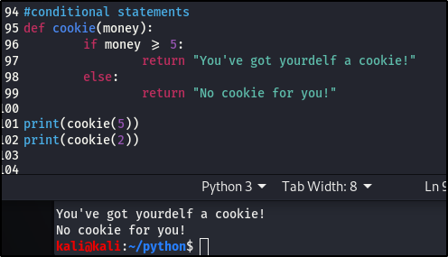

Conditional Statements.
Here we’ll learn howr to make “decisions” in Python This is the moment when you can use Python for more than just an ordinary calculator.
A conditional statement is a set of rules performed if a certain condition is met. It is sometimes referred to as an If-Then statement, because IF a condition is met, THEN an action is performed. Like: IF a value is less than 20, THEN display the words "Value is less than 20" on the screen.
Here's an almost everyday senario:
You head over to the store to get some cookies and the drink costs $5. If you have $5, you'll be able to get the cookie but if you don't, then you won't be able to purchase it.This is a condition, which is based on the amount of money you have.WIth these conditional statements, we can run, if else and if elseif and so on.
Ok let's go ahead and add it to our script:

Let's look at a senario with multiple parameters:
You are an adult, and in the Us you have to be 21 years to be able to get an alcoholic drink. In this senario, you have to be both of age and have the right amount to purchase your drink. (If you don't drink, that fine, I don't either but this is just a realistic example)
In this example, we have multiple conditions:- Have the money and of age.
- Have the money but not of age.
- Don't have the money but of age.
- Don't have the money and not of age.
Here, i'll introduce elseif, which is written as 'elif '. Elif is used when there are more than two conditions, so you can have multiple elifs in your code.

This is it for conditional statements, and hopefully this made sense to you.
What you need to be thinking about is what are the different senarios that could happen in this situations, think of the logic behind them,. So when yo're building out a script or your first program, you need to think logically. If I make a conditional statement, what's the logic behind it? What are the different possible senarios and there outcomes? Just think it out in plain English, for it to make sense to you, before writing it out in code.
Make sure you practice, you'll understand better, and it'll get easier to read and write codes with multiple senarios.
Let's move on to Lists.